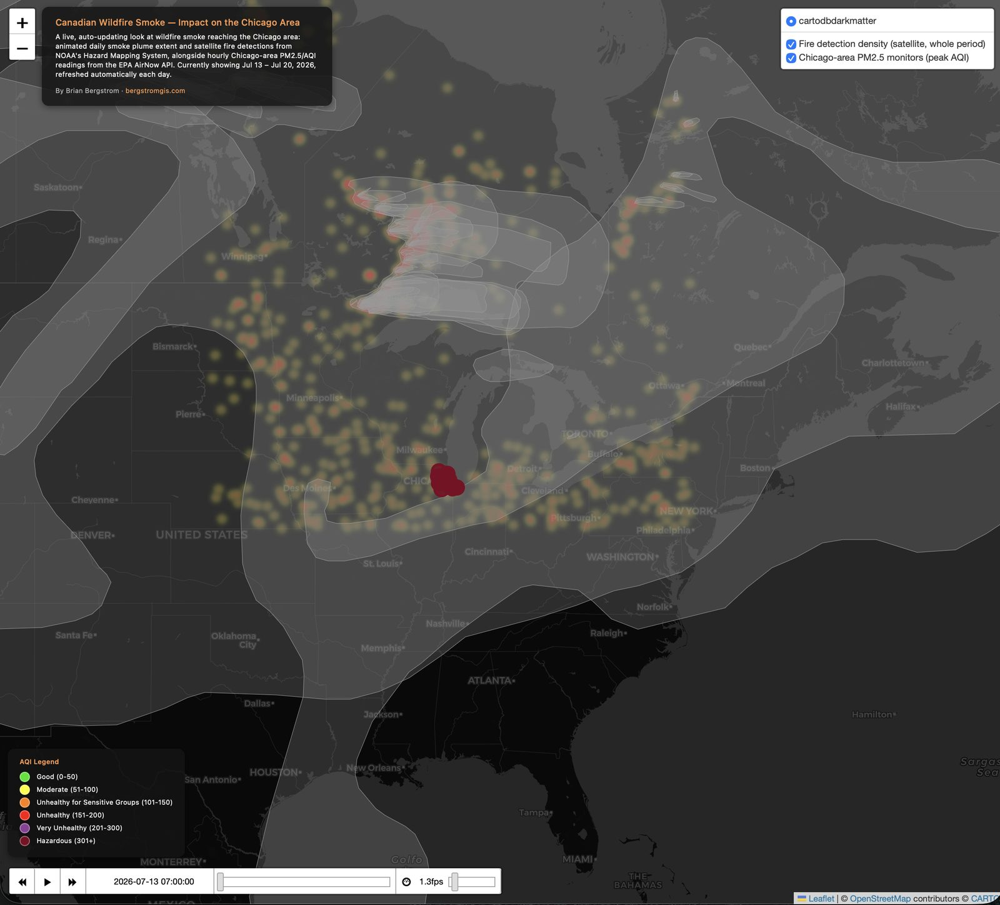

Canadian Wildfire Smoke Dashboard
A live, auto-updating dashboard tracking Canadian wildfire smoke and its impact on Chicago-area air quality — rebuilds itself daily, no manual updates.

In July 2026, smoke from over 800 Canadian wildfires pushed Chicago's air quality to "hazardous" levels — worst in the world at one point, with an AQI as high as 753. I built this dashboard to map that event, and then took it a step further: rather than a one-time snapshot, it's set up to keep tracking whatever's currently happening, indefinitely, without me touching it again.
What it shows
An animated day-by-day smoke plume extent from NOAA's Hazard Mapping System, a satellite fire-detection density layer showing where the source fires are burning, and hourly PM2.5/AQI readings from 20 Chicago-area monitoring stations via the EPA AirNow API — all on one map, with an AQI legend so the severity is easy to read at a glance.
Actually live, not just "live" in the marketing sense
A GitHub Actions workflow reruns the full pipeline every morning: it re-fetches fresh smoke, fire, and air-quality data for a rolling eight-day window, rebuilds the dashboard, and pushes the update automatically. There's no backend server — it's a static site that rebuilds itself on a schedule. The API key that powers the AirNow data pull is stored as an encrypted GitHub secret, never exposed in the public repository.
The date window is relative ("yesterday back seven days"), not fixed to the July 2026 event — so as that event fades, the dashboard will keep reflecting whatever's actually happening next, rather than staying frozen on old data.
Live and rebuilding itself daily.
View the dashboard (opens in a new tab) View the code (opens in a new tab)Let's talk about a job, a project, or both.
I'm open to full-time GIS Analyst roles and freelance/consulting work.